Ekos
Tutoriel pour contrôler son Reflex depuis son ordinateur grâce à Kstars / Ekos.
Ce tutoriel est utile à toute personne possédant un ordinateur sous ubuntu, avec un apn.
1ère partie : Installation de kstars
Pour commencer, on va installer kstars.
Ouvrez un terminal puis entrez cette commande ( Ctrl + Shift + V pour coller dans le terminal ) : "sudo apt-add-repository ppa:mutlaqja/ppa"
Puis :
Vous avez maintenant fini d'installer kstars ! On passe à la suite !
2ème partie : Création d'un profil Ekos, et APN
Pour commencer, lancez kstars
Vous arrivez donc sur cette fenêtre :
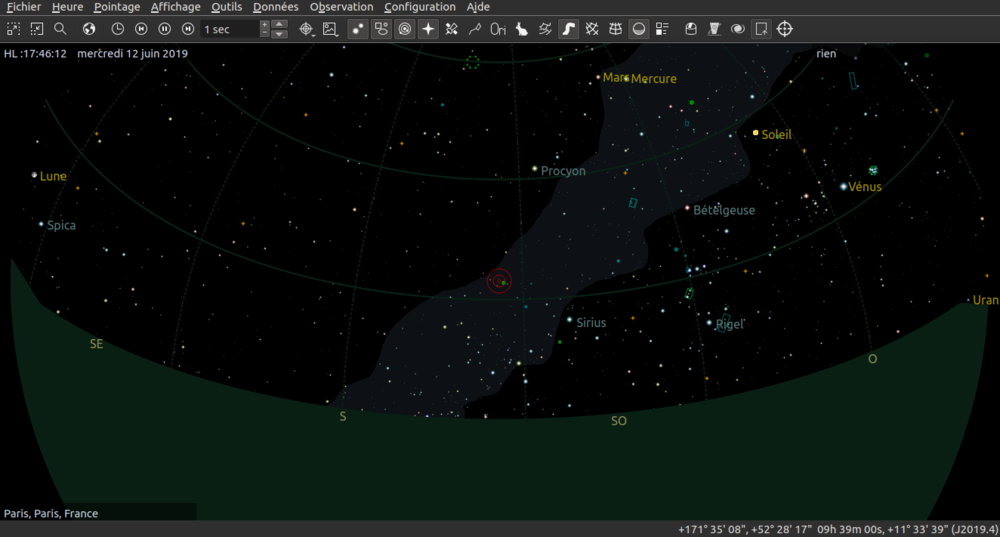
Si c'est le cas, ouvre le menu outil en haut à gauche, puis séléctionnez "Ekos" :
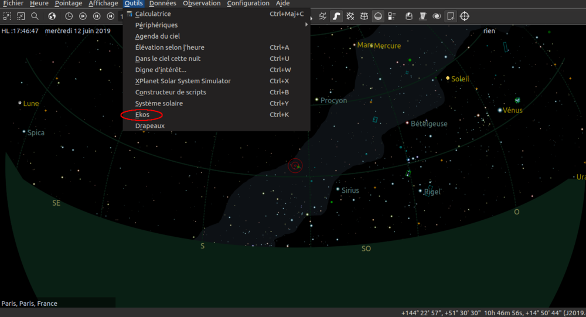
Vous arrivez donc sur cette page :
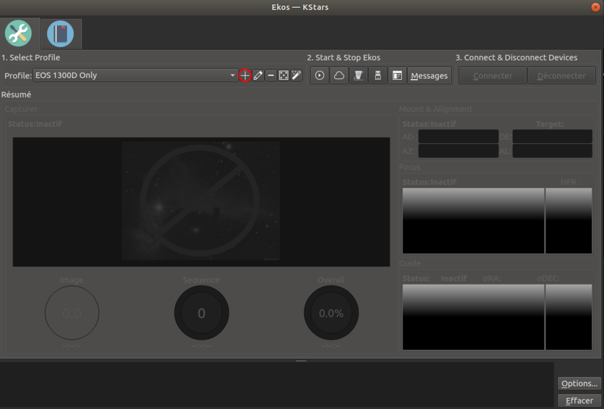
Il faut ensuite cliquer sur la petite croix pour ajouter un profil ( entourée en rouge )
Nous voilà sur l'éditeur de profil !
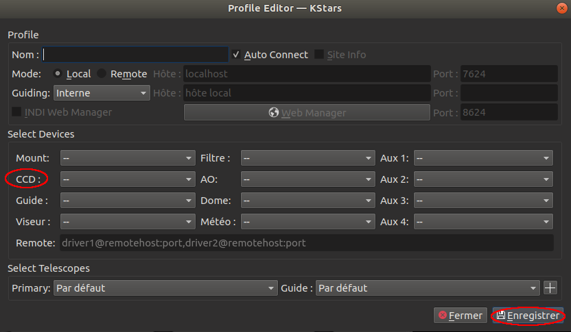
Sélectionnez CCD puis cliquez sur Canon DSLR
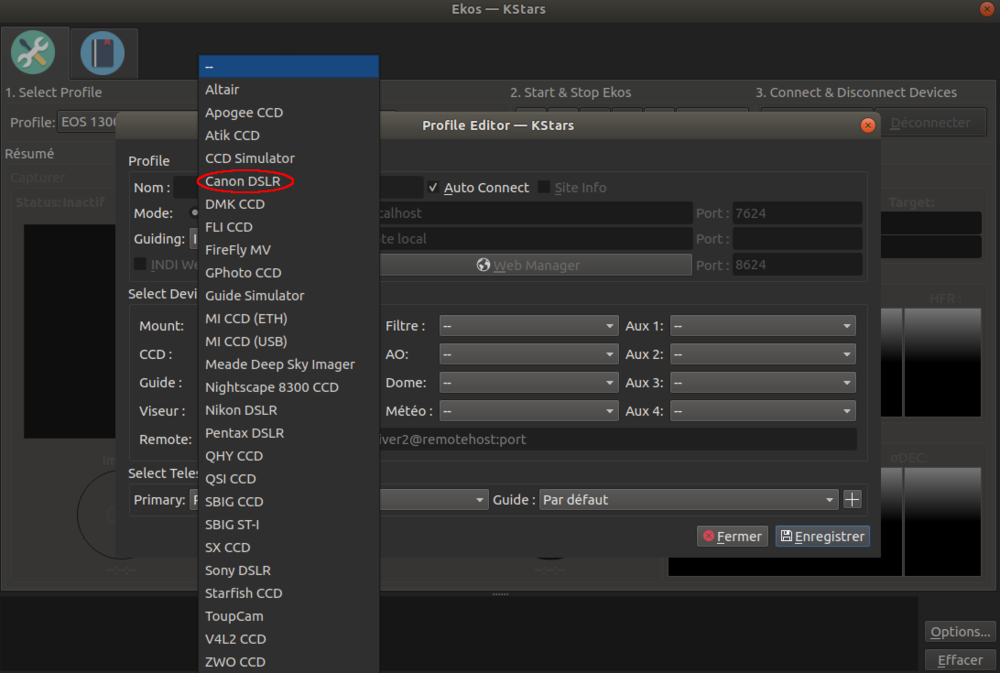
Vous pouvez maintenant enregistrer le profil.
Et avant de passer à la suite, ouvrez Fichiers, puis éjectez l'appareil photo, sans le débrancher ! C'est pour qu'il ne soit plus reconnu en tant que lecteur, mais en tant qu'appareil !
3ème partie : Utilisation de Ekos pour contrôler l'APN ( Attention c'est long ! )
Pour commencer, une fois votre profil fait, votre apn branché, enfin bref toute l'étape 2 de faite, lancez Ekos :
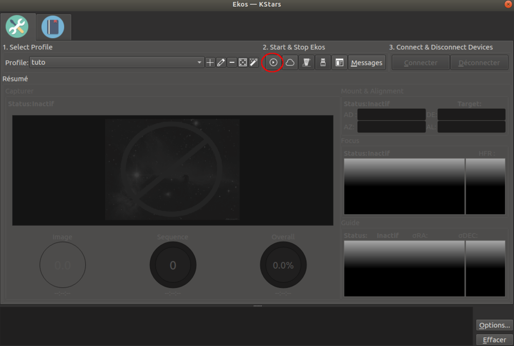
Si vous avez des erreurs, vérifiez si les 2 premières étapes ont bien été réalisées.
Une fois tout ceci lancé, vous obtenez ça :
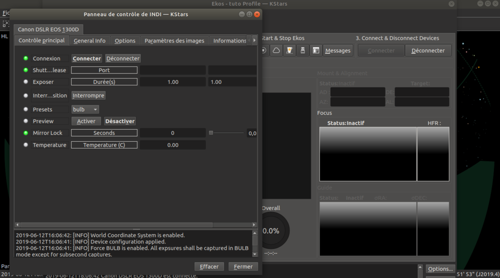
Vous pouvez fermer cette première fenêtre, revenons sur Ekos.
Allez maintenant dans la section appareil photo :
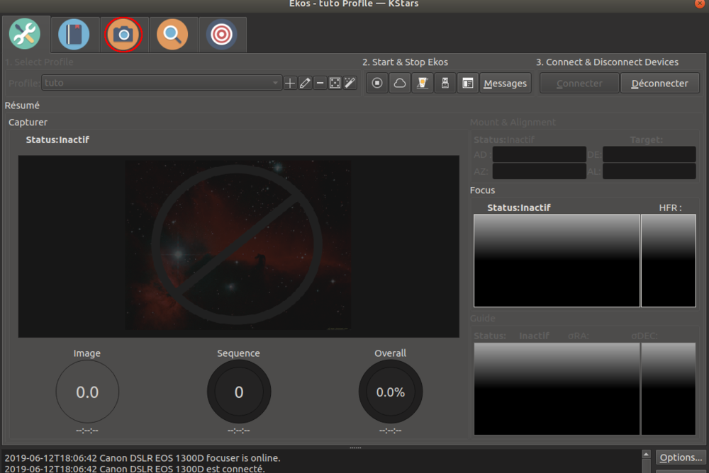
Vous voilà sur une fenêtre pleine d'options ! Toutes aussi utiles les unes que les autres !
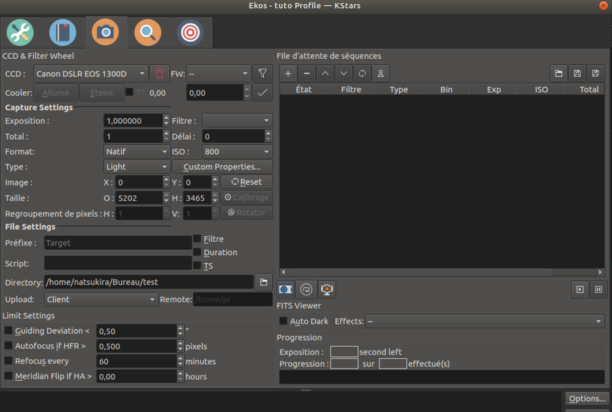
On va commencer par le commencement !
Premièrement, pour lancer le live view et faire votre mise au point, cliquez sur ce bouton :
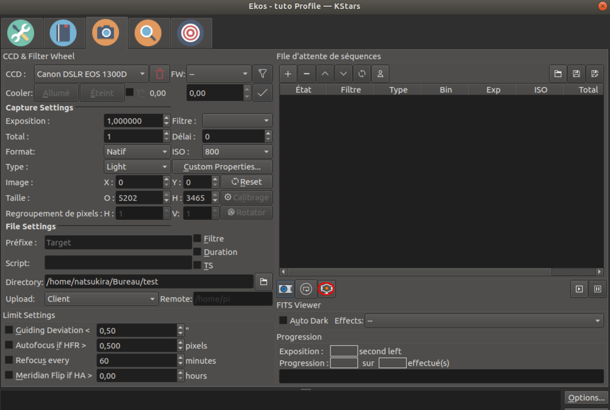
Le live view est désormais actif ! Je vais le refermer car nous n'en avons pas besoin ici, mais pour faire la map ou autre, il est très pratique de l'avoir sur grand écran.
Par là, ce sont tout les paramètres d'expositions, d'iso, le délai entre chaque pose, le total de poses et le format ( FITS ou RAW ) :
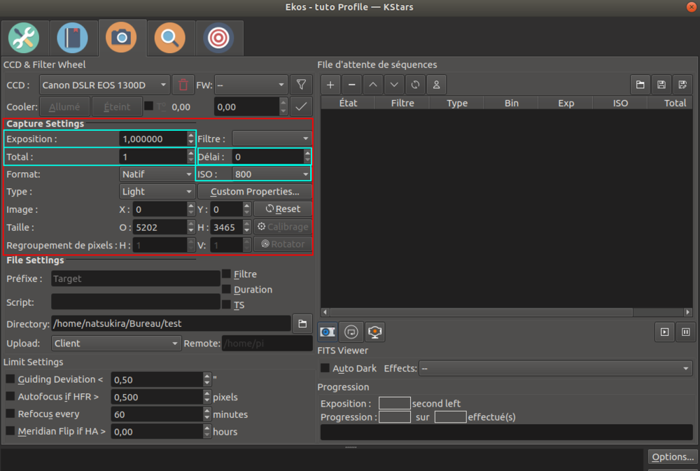
A droite, ce sont les séquences, vous pouvez en ajouter autant que vous le souhaitez, dans l'exemple ci dessous, j'en ai mis une seule qui va faire 30 poses de 10 secondes à 800 iso.
Pour ajouter une séquence, il suffit de cliquer sur la croix encadrée en rouge.
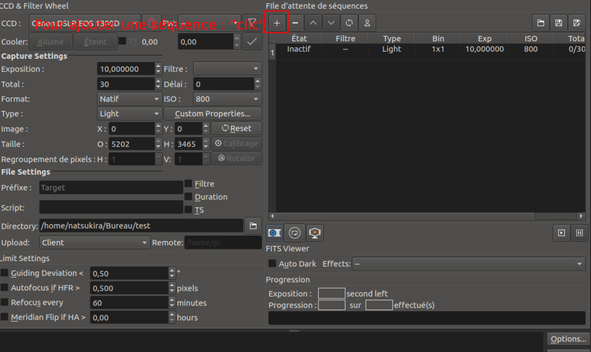
Pour définir où vont partir les photos :
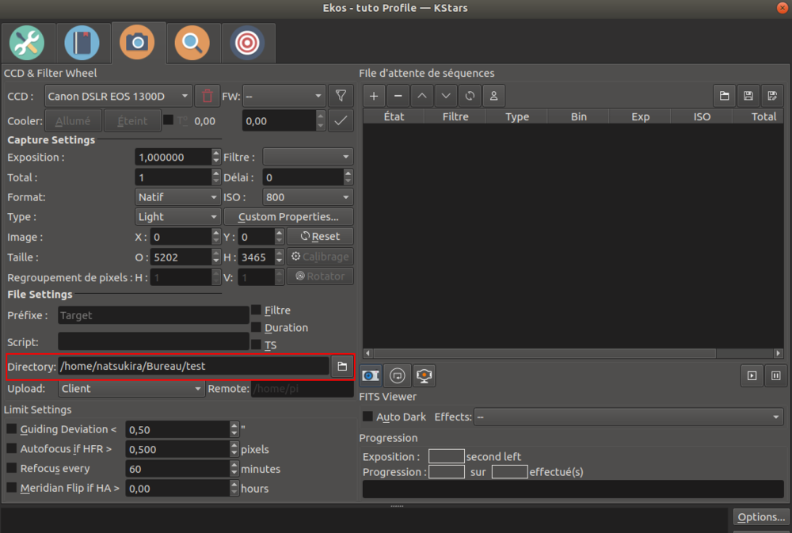
Avant dernier point, pour changer de type de prise, "Light Dark Flat ou Offset" il faut cliquer ici :
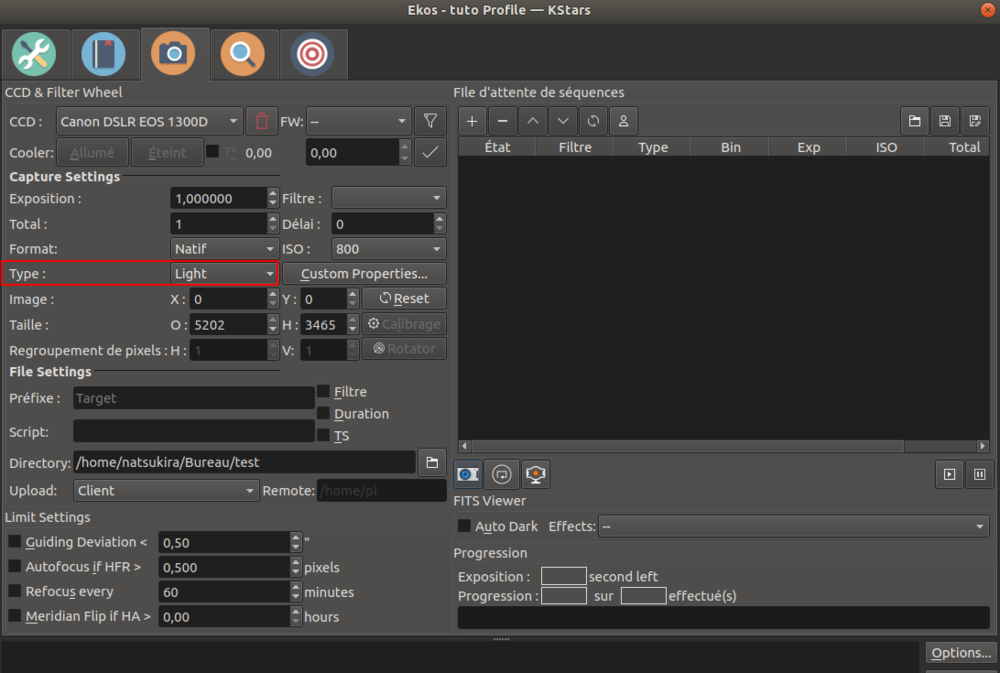
De sorte à ce que les fichiers aillent dans les bons dossiers et aient les bon noms.
Pour finir il ne vous reste plus qu'a lancer votre séquence !
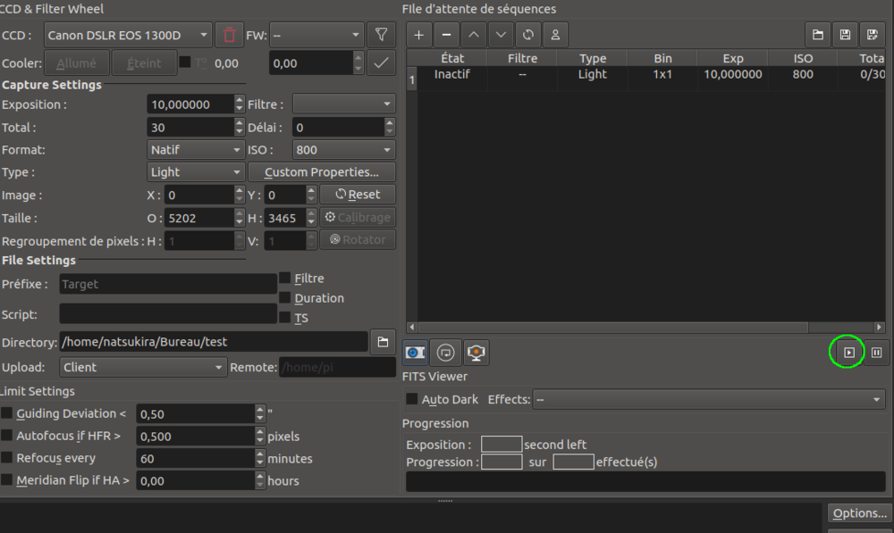